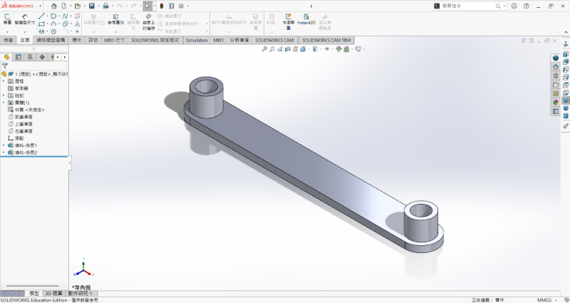
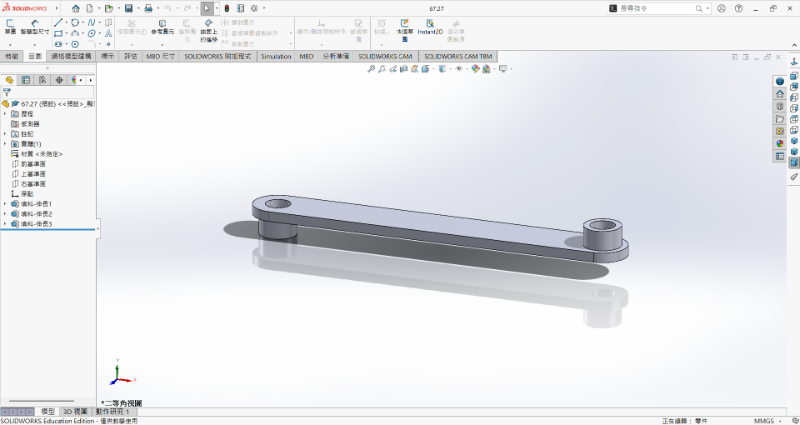
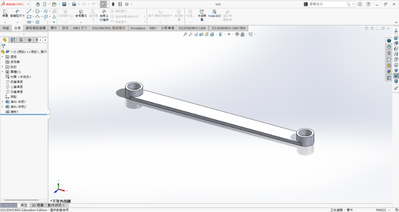
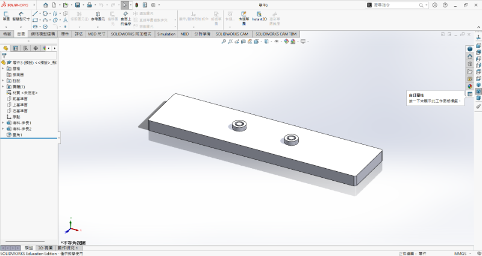
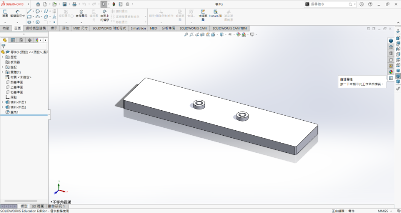
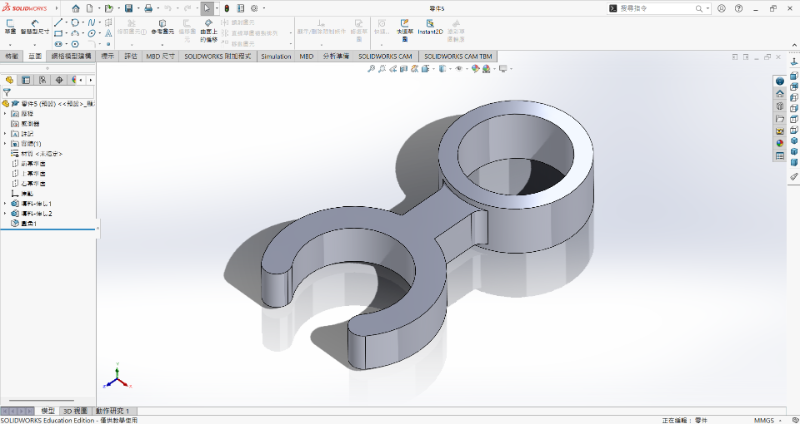
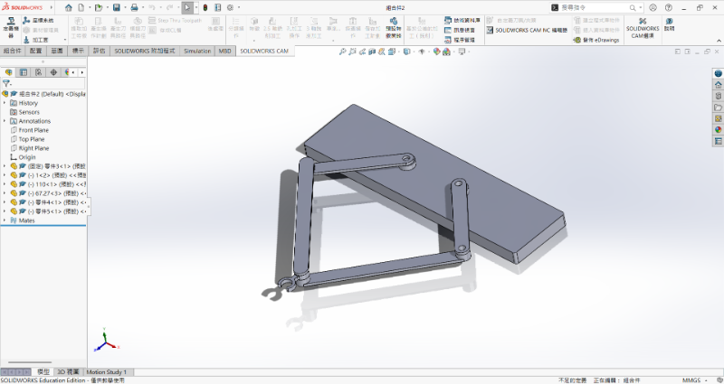

設計方向 <<
Previous Next >> WH7
連桿機構



 




我們參考網路上影片並結合chat gpt幫我們解決設計理論上的不足得出以下結論。
筆尖 C 能畫滿一張 20 × 20 公分的紙 —— 換句話說，從中心算起，筆尖左右各能到 ±10 cm，上下也 ±10 cm。
簡單的機械長度設定
左右兩個馬達固定點 A、E 中間距離
𝑑=50
d=50 cm（所以 A 到中心是 25 cm）。
A 到 B（Link1）你給的是 67 cm（右邊的也一樣）。
我們在想的就是中間那兩段（B→C 與 D→C），我把它們的長度都叫做𝐿
想像 B 在 A 周圍繞一圈（半徑 67 cm），D 在 E 周圍繞一圈。為了讓 B 或 D 能「碰到」紙上任何一個 C 點，從 B（或 D）拉到 C 的那段L必須夠長。
數字說明
把中心當原點，最靠近 A 的紙上點是在左邊中間（那點離 A 只有 15 cm），最遠的點是在右上或右下角（那點離 A 大約 36.4 cm）。
所以當 B 在 A 邊上某個位置時，最需要的中間連桿長度會在這兩個情況下取最大值，計算結果是：
最短需要的
L（理論下界） =67−15=52
67−15=52 cm。
（也就是只要中間連桿至少 52 cm，理論上就能把筆尖到達整張 20×20 的紙上每一點。）
所以 110 cm 是怎樣？
實務上，太長會有壞處：結構變笨重、容易彎曲或震動、需要更大功率的馬達去驅動，操控也會變難。
如果想要安全但不笨重：選大約 60–65 cm 比較合適（比 52 cm 多一點裕度，但不至於像 110 cm 那麼長）。
如果你有空間、對精度和慣性不在意，110 cm 也可以
為什麼 Link1、Link4 是 67.27 cm？
因為你一開始設計的三角形是 水平 50 cm、垂直 45 cm。
用畢氏定理算斜邊：
50²+45²≈67.27 cm
50²+45²≈67.27 cm
所以 Link1（A→B）跟 Link4（E→D）就是 67.27 cm。
筆尖要畫滿一張 20 × 20 cm 的紙。
這代表筆尖要能跑到：
左右各 10 cm
上下各 10 cm
所以中間的連桿（B→C、D→C）要夠長，才有辦法連到紙上所有角落。
算出來的「最少需要」 52 cm。
如果只做到剛剛好，可能會卡住或角度很難調。
第四週由於全部組員帳號被封鎖，所以未更新第四週進度。測試。
第五週由於全部組員帳號被封鎖，所以未更新第五週進度。測試。
第六週進度。
設計方向 <<
Previous Next >> WH7